Research
I am a research director at INRAE (Montpellier, France). My research interests span forest and agricultural entomology, with a particular focus on the spatial dynamics of pest species at both the landscape and continental scales. I am especially interested in biological invasions and the effects of climate change on phytosanitary risk.
Climate change, biological invasions, and phytosanitary risk
Preventing the introduction of exotic harmful organisms is extremely challenging in the context of continuously increasing international trade. However, the management of invasive species can be substantially improved through enhanced prevention, surveillance, and public awareness. Identifying regions that are currently — or may become — suitable for a given species is essential for preparedness, as it allows the assessment of risks associated with potential introductions and the development of appropriate management strategies.
A key element in this context is the potential geographic distribution of species whose introduction is of concern. Considerable research efforts are therefore devoted to identifying the environmental factors that shape species distributions, with particular emphasis on climatic drivers. Mapping areas that are climatically suitable for a species makes it possible to anticipate its potential spread and to better assess the threat it may pose in terms of agricultural damage.
Species distribution models
Species distribution models (SDMs) are well-established tools used to characterize the climatic niches of species and to identify areas offering suitable environmental conditions. I use these approaches to assess phytosanitary risk and to improve our understanding of biological invasion processes. Climate change induces profound alterations in the environmental conditions experienced by species, and SDMs provide a framework to evaluate its effects on the potential distribution of invasive species. As such, these models represent a valuable tool for anticipating changes in risk under future climate scenarios.
The principle of SDMs is straightforward and is summarized in the figure below. Occurrence data i.e. locations where the species is present (black circles) and, when available, absent (white circles) are combined with environmental data (most often climatic) to build a statistical model. This model is then used to estimate the species’ potential geographic distribution, that is, the regions where it could persist. Some of these areas may already be occupied, whereas others may not be, for example because dispersal barriers have prevented colonization. The model can also be used to estimate potential distributions under past climatic reconstructions or future climate projections. Finally, such models can be applied to estimate the potential distribution of a species outside its current range and thus assess its possible expansion (under current or future climatic conditions) following introduction.
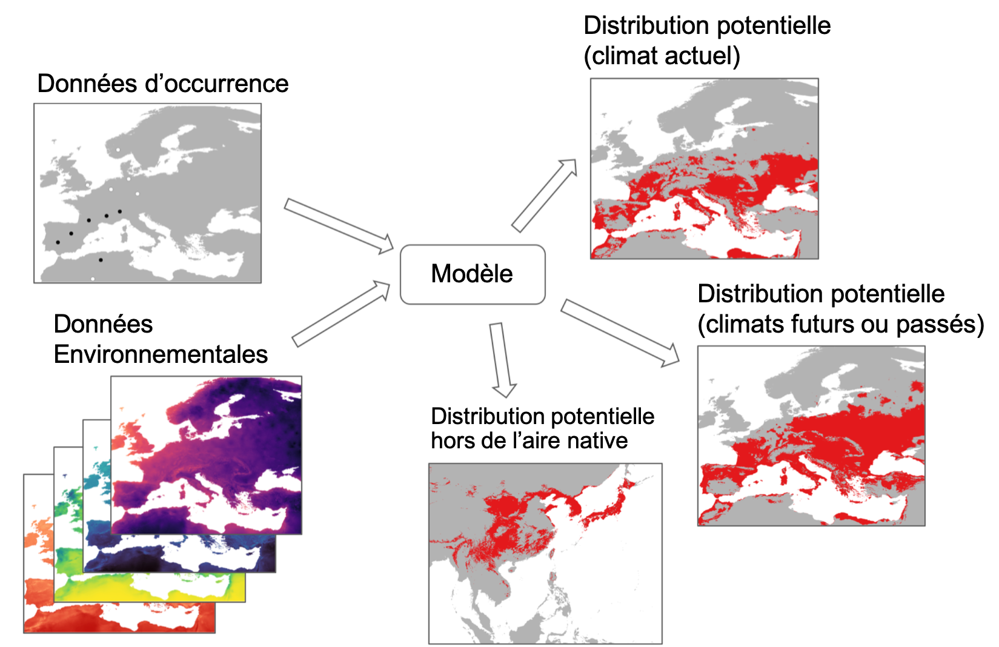
Principle of species distribution models (see text for details) (Rossi, unpublished).
Some examples
Numerous studies have relied on SDMs, and here I illustrate this approach using a limited number of examples involving insect pest species. Guisan et al. (2017) provide an excellent synthesis, together with R code for implementing these models and a wide range of illustrative applications.
The figures below illustrate the potential distribution of the following species: - the brown marmorated stink bug Halyomorpha halys under current climatic conditions - the glassy-winged sharpshooter Homalodisca vitripennis, a vector of the bacterium Xylella fastidiosa, for the period 2021–2040 - the pine processionary moth Thaumetopoea pityocampa during the Last Glacial Maximum (−21,000 years).
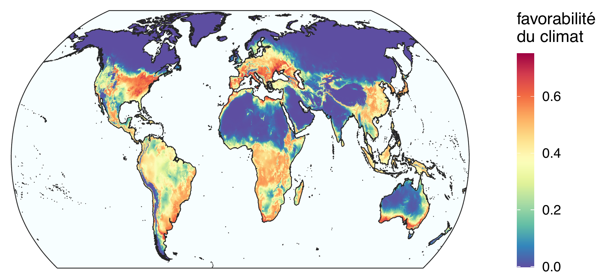
Potential distribution of the brown marmorated stink bug Halyomorpha halys* under current climatic conditions (2021). The map represents the suitability index produced by the model: higher values indicate more favourable conditions. Modified after Streito et al. (2021).*
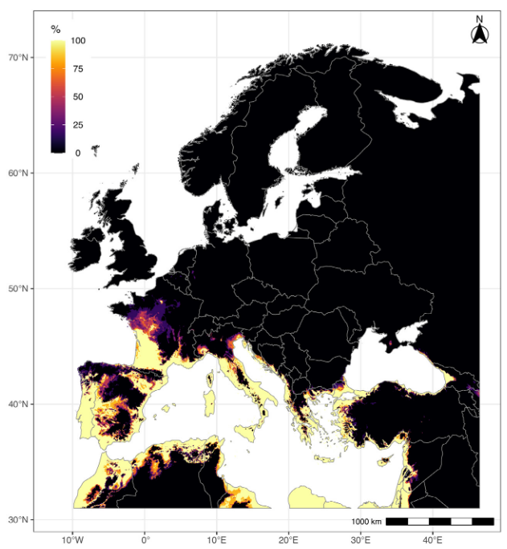
Potential distribution map of the glassy-winged sharpshooter Homalodisca vitripennis* in Europe for the period 2021–2040. This species is currently absent from Europe. The index shown corresponds to the proportion of models indicating climatically favourable conditions. See Rossi and Rasplus (2023) for details.*
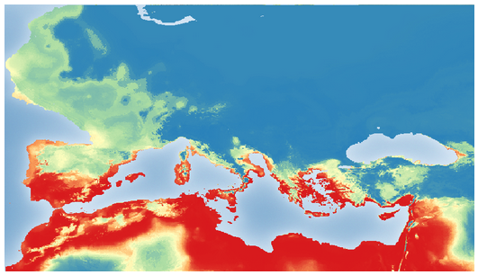
Reconstruction of the potential distribution of the pine processionary moth Thaumetopoea pityocampa* in Europe during the Last Glacial Maximum, approximately −21,000 years ago. Favourable conditions are shown in red, whereas unfavourable conditions are shown in blue. This map highlights refugial areas identified using genetic data (Rossi et al., in preparation).*
Things become more complex when infra-specific structure is considered: the case of Xylosandrus crassiusculus
Species distribution models are generally calibrated at the species level. However, several authors have pointed out that this practice limits the ability of models to adequately account for local adaptations, such as those that may occur at the margins of species’ geographic ranges. Some species are composed of distinct clades, i.e. genetically differentiated subsets. When these clades correspond to populations with different ecological characteristics, risk assessments conducted at the species level might lack sufficient precision.
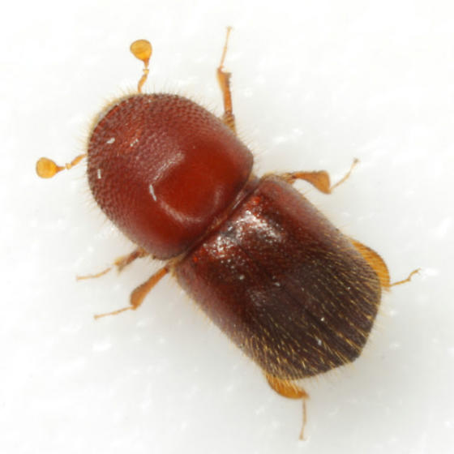
Xylosandrus crassiusculus
Photo O. Denux/INRAE
The invasive ambrosia beetle Xylosandrus crassiusculus provides a clear example of this situation. X. crassiusculus is a Scolytinae beetle native to Asia that has been recently introduced into Europe. This xylophagous insect is highly polyphagous; it lives beneath the bark of trees, excavates numerous galleries in the wood, and therefore represents a significant threat to many plant species. Population genetic studies based on mitochondrial and nuclear DNA markers have shown that this species is composed of two genetically differentiated clades, which are distributed across partially disjunct geographic ranges. In Europe, results indicate that only one of these two genetic clades has so far been detected.
When separate species distribution models are built for each clade, current climatic conditions in Europe are found to be suitable for both. The clade that is currently absent could therefore establish on the continent if it were to be introduced. Moreover, the clade already present occupies only a limited portion of the regions that are climatically suitable for its development, suggesting that the expansion of X. crassiusculus in Europe is likely still in its early stages.
The figure below illustrates the potential geographic distribution of the two clades of X. crassiusculus.
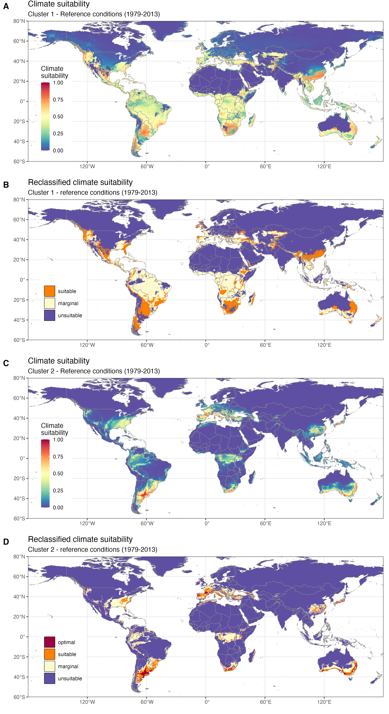
Climatic suitability (1979–2013) for two genetic lineages of Xylosandrus crassiusculus. A. suitability index for clade 1. B. Suitability index for clade 1 classified into three categories (favourable, marginally favourable, and unfavourable). C. Suitability index for clade 2. D. Suitability index for clade 2 classified into four categories (optimal, favourable, marginally favourable, and unfavourable). Adapted from Urvois et al. (2024).
Is the recent introduction of X. crassiusculus into Europe linked to climate change? While the intensification of international trade is well known to drive the increased movement of invasive species, the role of climate change is less straightforward. A retrospective analysis of climatic suitability over the past century makes it possible to assess the extent to which climate change in Europe may explain the recent establishment of this ambrosia beetle. The results indicate that climatic conditions were already favourable for this species during the 20th century (see figure below), suggesting that its recent colonisation of Europe is more likely driven by the intensification of transnational trade than by recent environmental change.
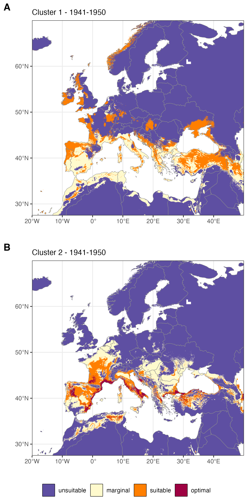
Climatic suitability for the two genetic lineages of Xylosandrus crassiusculus* during the period 1941–1950. A. Clade 1. B. Clade 2. Adapted from Urvois et al. (2024).*
Projecting the models under different climate change scenarios allows the assessment of how areas at risk may evolve over the coming decades. Climate warming is expected to shift climatically favourable areas northwards in Europe. Some of the most active commercial ports involved in timber trade, such as Rotterdam or Amsterdam, could thus become climatically suitable for the species. This scenario clearly illustrates how climate change and international trade may act synergistically to promote the introduction and establishment of invasive species.
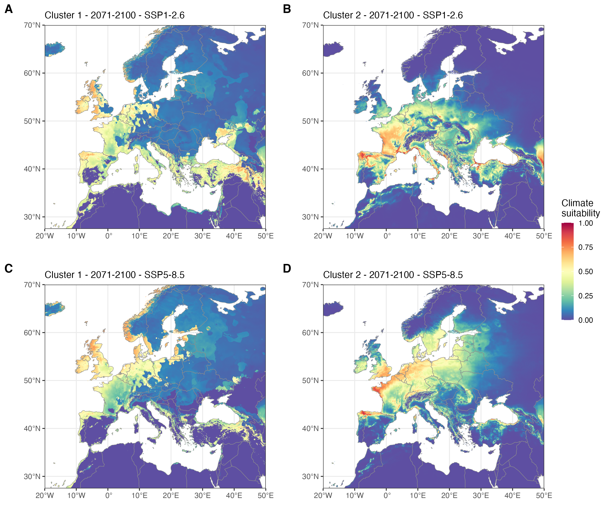
Climatic suitability for two genetic lineages (clades) of the ambrosia beetle Xylosandrus crassiusculus* for the period 2071–2100 under two greenhouse gas emission scenarios, SSP1-2.6 and SSP5-8.5, in parts of Europe and the Mediterranean region. Maps represent a consensus derived from the median of model projections using five GCMs for each SSP (see Urvois et al. (2024) for details). A. Climatic suitability for clade 1 in 2071–2100 under SSP1-2.6. B. Climatic suitability for clade 2 in 2071–2100 under SSP1-2.6. C. Climatic suitability for clade 1 in 2071–2100 under SSP5-8.5. D. Climatic suitability for clade 2 in 2071–2100 under SSP5-8.5. Adapted from Urvois et al. (2024).*
Studies conducted on X. crassiusculus illustrate how a multidisciplinary approach combining population genetics and ecological modelling can be used to identify geographic patterns of genetic diversity, and how this knowledge can be mobilised to improve risk assessment and preparedness for biological invasions.
Impact of landscape structure on the spatial dynamics of pest species
The landscape scale is a key spatial level for understanding insect population dynamics and their relationships with environmental heterogeneity (i.e. landscape structure and composition). Many management and land-use planning options are considered at this scale, which is also the level at which surveys are conducted to monitor changes in forest and crop health and to identify potential hotspots of pest outbreaks.
The pine processionary moth in large-scale agricultural landscapes
For forest pest species, it is essential to move beyond a forest-only perspective and to integrate other landscape compartments in order to understand overall population dynamics. The pine processionary moth is an excellent biological model to address these questions. This species, native to southern Europe, has been expanding northwards across the continent as a result of climate warming (Roques, 2015). Over the past four decades, the expansion front has crossed the Centre region of France, including extensive agricultural areas such as the Beauce, where forest cover is extremely limited. How has T. pityocampa managed to colonise vast territories largely devoid of forests?
I addressed this question in collaboration with Jérôme Rousselet from the INRAE Forest Zoology Unit in Orléans. We analysed exhaustive census data of host trees of the pine processionary moth within a 22 × 22 km study area located in the Beauce region (see figure below).
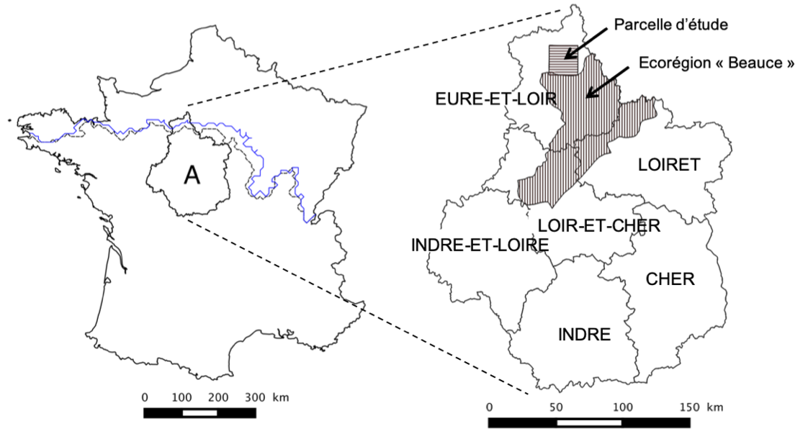
Study area. A) Location of the Centre region in France. The expansion front of the pine processionary moth is shown in black for the year 2006 and in blue for the year 2010. B) Administrative departments of the Centre region and location of the study area and the “Beauce” ecoregion.
We then built a statistical model linking the probability of occurrence of a host tree to its distance from the nearest built structure (see figure below: A: trees, B: built structures, D: distance between trees and the nearest built structure). This very strong relationship reflects the fact that residents commonly plant coniferous trees for ornamental purposes (see Rossi et al. 2016a for details).
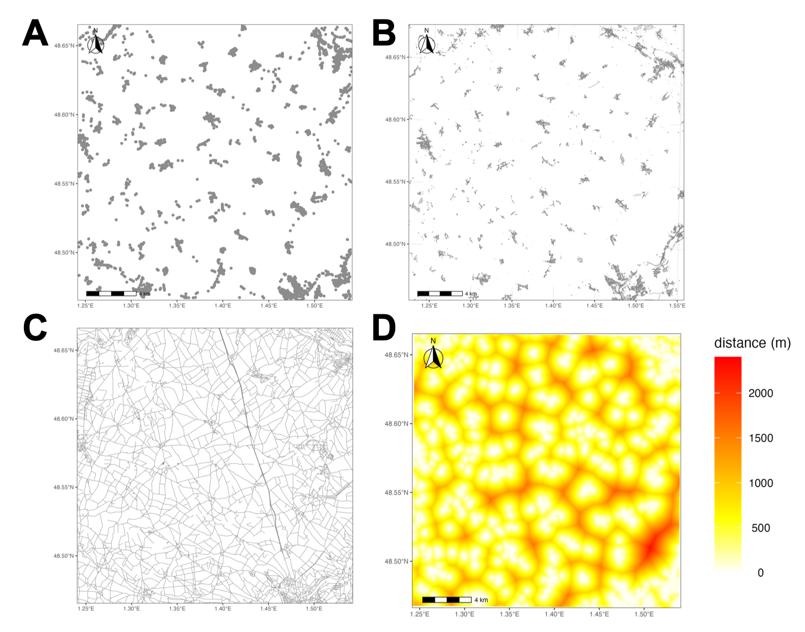
Conceptual framework of the developed model. A) Distribution of the surveyed trees (exhaustive inventory). B) Built-up elements (IGN data). C) Road network (IGN data). D) Covariate “distance to the nearest built-up element”. Adapted from Rossi et al. (2013, 2016).
This model can be used to estimate the distribution of pine processionary host trees outside forests across a large agricultural region corresponding to the Beauce ecoregion in the Centre region of France (see figure below). According to the French National Forest Inventory (IFN), forest cover is very limited in this region (upper panel). However, when the distribution of trees outside forests simulated by the model is added, the entire study area is shown to contain potential hosts for the pine processionary moth. This pattern simply reflects the presence of built-up areas around which ornamental trees are commonly planted.
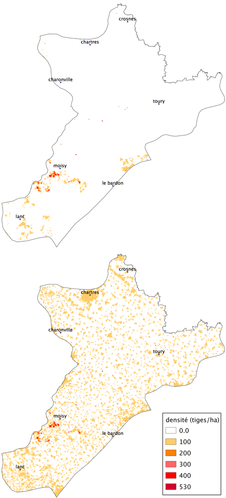
Distribution of host trees of the pine processionary moth in the “Beauce” ecoregion. Top: distribution derived from the National Forest Inventory (NFI). Bottom: combined distribution of tree densities recorded by the NFI and estimated by the model.
The main conclusion of this work is that the pine processionary moth does not face host availability constraints in agricultural landscapes such as the Beauce region, because ornamental trees are homogeneously distributed. Although tree densities are low, spatial coverage is continuous, which facilitated the geographic expansion of the moth.
…and in urban environments
As in rural areas, urban and peri-urban environments host trees outside forests, commonly referred to as urban trees. These trees play an important role in urban quality of life, but they may also generate problems (often referred to as “ecosystem disservices”), for instance by producing allergenic pollen or by harbouring species that pose risks to public health. This is the case for the pine and oak processionary moths, whose urticating larvae can cause severe lesions in domestic animals and allergic reactions in humans. For such species, accurate knowledge of tree distribution in urban areas allows effective monitoring of infestations and the development of risk maps at the scale of cities and metropolitan areas (see figure below). These maps can be used to improve public information and to support more efficient pest management strategies (Rossi et al. 2016b).
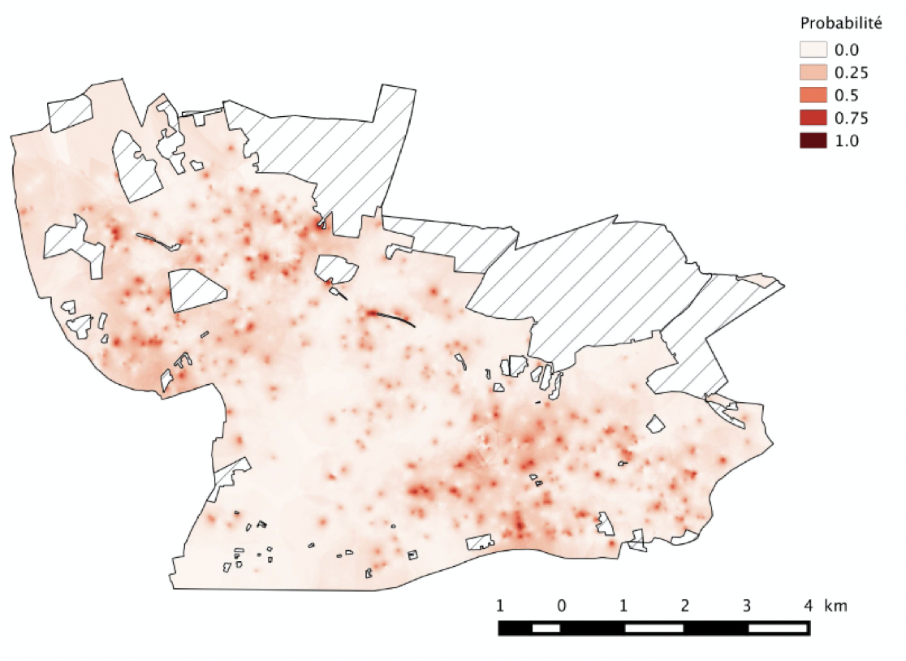
Maps of the probability of presence of pine processionary moth nests. Mapped values were estimated using ordinary kriging with indicator variograms fitted for the threshold value Zk = 0. Values correspond to probabilities of observing abundances > 0, i.e. probabilities of presence. Map resolution is 25 × 25 m (Rossi et al. 2016b).
The choice of tree species planted in urban and peri-urban areas plays a major role in the dynamics of pine processionary moth infestations. Selecting species that are little or not attacked provides an excellent means to avoid favoring the insect by supplying high-quality trophic resources. The figure below illustrates the observed preferences in the city of Orléans for 11 groups of trees.
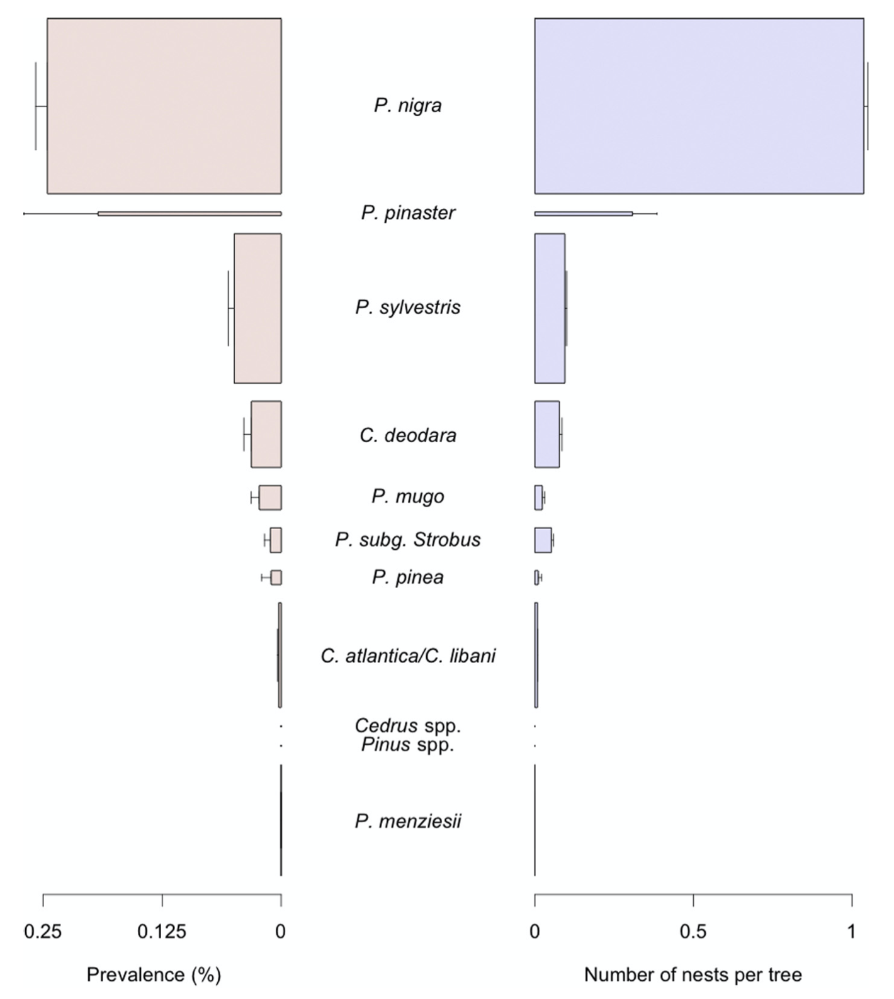
Prevalence and number of nests of the pine processionary moth Thaumetopoea pityocampa* observed across 11 tree taxa in the city of Orléans. Prevalence is defined as the frequency of trees with at least one nest. Trees are ranked in decreasing order of prevalence from top to bottom of the graph. Bars are proportional to the abundance of tree taxa. Error bars represent standard errors. From Rossi et al. (2016b).*
The OSTils project, completed in 2023, produced additional data on the distribution of the pine processionary moth in three French cities with contrasting climates: La Baule, Montpellier, and Orléans. See the project page.
Assessing Risk, Anticipating, and Preparing for Plant Health Crises
Pest Organisms
The emergence of a pest, whether exotic and resulting from a biological invasion or not, can in some cases represent a significant risk to agriculture. Risk assessment, ideally before a crisis situation arises, is challenged by the inherently uncertain, unpredictable, and irregular nature of the hazard. Nonetheless, it is a key element for effective management.
Evaluating risk requires solid knowledge of the species involved, the environmental and economic context, and reliable, efficient detection methods. As shown above, modeling also provides important insights for risk assessment and planning.
When a plant health crisis linked to a new pest occurs, it is unfortunately rare to have all the information needed to manage the problem effectively, while speed is a critical factor. The crisis triggered by the detection of the bacterium Xylella fastidiosa in France in 2015 provides a clear example of insufficient preparedness. This bacterium, considered extremely dangerous, had been detected two years earlier in Italy, where it caused massive damage in olive groves in the Apulia region. Yet, two years later, knowledge available in France regarding the insects capable of transmitting this disease, as well as modern bacterial detection techniques, remained very limited.
Risk assessment and anticipation are key elements of the strategy for managing pests in crops and forests.
Risk
Risks vary depending on the agricultural production systems concerned and differ in origin, frequency, intensity, and the preventive measures that can be implemented. These different risks also interact (multi-risk approaches), which can sometimes amplify their effects and complicate anticipation.
Chevassus-au-Louis (2007) defines risk as a non-inevitable phenomenon having effects considered harmful to society. It should be noted that the notion of harm, and with it the concept of risk, here relies on a social assessment of the situation. The IPCC (Intergovernmental Panel on Climate Change) aligns with this view, defining risk as the probability of occurrence of a hazardous event combined with an impact term. It considers the concept of risk as resulting from the interaction between hazards, exposure, and vulnerability of the system under consideration (IPCC, 2014).
The figure below illustrates the concept of risk in the context of pest-related threats.
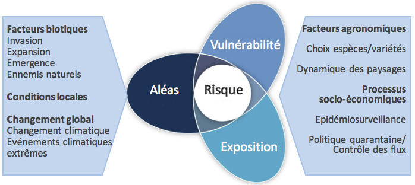
Conceptual diagram of biotic risks (modified from IPCC, 2014) (Rossi et al., 2019)
In the case of biotic risks considered here, the main hazards concern the invasion, expansion, and emergence of pests. Climate change — not to mention the occurrence of extreme events — also has a potentially significant impact. Exposure reflects agronomic factors such as the choice of species or crop varieties and the dynamics of the associated landscapes. These factors also affect the vulnerability of the system, as resilience capacities depend on the full set of local abiotic and biotic conditions that influence the physiological state of plants and thus their sensitivity to phytosanitary problems. Local biodiversity determines the presence of beneficial organisms.
Some interactions influence risk estimation: for example, climatic hazards can directly affect the emergence of a pest while also altering the vulnerability of the affected crop by impacting its physiological condition, or even its exposure by modifying its phenology. Socio-economic processes affect all elements that modulate pest-related risks. The economic importance of a crop determines the level of exposure, while the volume of trade can potentially influence the probability of introduction of new pests. The risk associated with pests also depends on epidemiological surveillance measures, control of trade flows, and quarantine policies. Beyond preventive measures, the effectiveness of existing curative treatments and investments in research to improve them also impact the risk incurred.
Preparedness
Julius Caesar
Preparedness for risks associated with pest emergence relies on identifying species likely to trigger plant health crises. This procedure, referred to as “horizon scanning”, corresponds to a systematic search resulting in a ranked list of species based on the risk of arrival, establishment, expansion, and damage. Roy et al. (2019) provide such a list for the European continent.
It is crucial to be able to accurately identify specimens intercepted at borders or simply observed in the field. This often requires the expertise of specialists who use identification tools based on morphology as well as molecular tools such as DNA barcoding. Identification is an absolutely critical aspect, and the shortage of specialists for certain taxonomic groups remains a significant concern (Engel et al., 2021).
Citizen Science
Citizen science has rapidly developed over the past decades and now represents a very valuable tool for pest detection (Streito et al., 2023). For example, we have been monitoring the expansion of the brown marmorated stink bug, Halyomorpha halys, since 2014 using a smartphone application developed by Dominique Blancard and Jean-Marc Armand (INRAE) within the AGIIR system (Streito et al., 2021).
The earlier an exotic species is detected, the higher the chances of successfully controlling it, and potentially eradicating it. Early detection is therefore a key element for authorities in charge of biosecurity. Citizen science once again proves to be a valuable asset, as illustrated by the case of the citrus spiny whitefly (Aleurocanthus spiniferus).
This insect, native to tropical Asia, causes major problems in citrus crops. Due to its small size, it is difficult to detect, and its colonies can be confused with scale insects. It is highly polyphagous, developing on around 100 host plants across 37 families, including various citrus species and grapevine.
This species has invaded different parts of the world, including the Pacific, Central, Eastern, and Southern Africa, the Indian Ocean region, and more recently Europe, where it was first reported in Italy in 2008. A. spiniferus is a regulated insect and was considered absent from France until 2023.
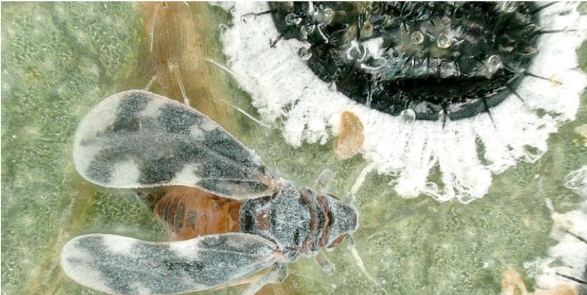
Aleurocanthus spiniferus, the citrus spiny whitefly (photo J.-C. Streito/INRAE).
In April 2023, a resident of the Gard region, France, Émilie Mendes, observed an unknown insect in her garden and took photographs. She identified the specimen as belonging to the genus Aleurocanthus. She then posted her photos on the website of the French National Inventory of Natural Heritage (INPN: https://inpn.mnhn.fr/accueil/participer/inpn-especes). This site hosts datasets generated by citizen science initiatives, which are subsequently reviewed by networks of experts. Entomologist Jean-Claude Streito (INRAE) discovered the photograph and validated the identification. Since the genus Aleurocanthus includes several regulated pest species, he requested additional photographs, which allowed him to confirm the diagnosis. At the end of May 2023, the French Directorate General for Food (DGAl) of the Ministry of Agriculture and Food Sovereignty was informed of the probable presence of A. spiniferus in France.
This report quickly prompted additional sampling conducted by official services, followed by confirmation of the identification by ANSES. The Ministry then initiated regulatory procedures aimed at controlling the species:
1) investigation of possible sources of introduction,
2) assessment of the actual distribution of the organism,
3) disinfection of plants intended for trade to prevent the spread of the pest,
4) quantification of unreported damage to crops and other plant species on the territory,
5) awareness-raising among stakeholders and the general public.
This example illustrates the importance of citizen contributions to the early detection of invasive exotic organisms. While validation by scientific experts is essential, it is above all the responsiveness of the various actors involved that ensures a rapid response and effective management of the situation (Streito et al., 2023).
Citizen science represents a valuable tool for monitoring the expansion of invasive species and for quickly detecting the arrival of species potentially harmful to agriculture and forestry.
References
Chevassus-au-Louis B., 2007. L’analyse des risques. L’expert, le décideur et le citoyen. Editions Quae, Versailles.
Engel, M.S. et al 2021. The taxonomic impediment: a shortage of taxonomists, not the lack of technical approaches. Zoological Journal of the Linnean Society 193, 381–387. https://doi.org/10.1093/zoolinnean/zlab072
Godefroid, M., Cruaud, A., Streito, J.-C., Rasplus, J.-Y., Rossi, J.-P., 2022. Forecasting future range shifts of Xylella fastidiosa under climate change. Plant Pathology 71, 1839–1848. https://doi.org/10.1111/ppa.13637
Godefroid, M., Meurisse, N., Groenen, F., Kerdelhué, C., Rossi, J.-P., 2020. Current and future distribution of the invasive oak processionary moth. Biological Invasions 22, 523–534.
Guisan, A., Thuiller, W., Zimmermann, N.E., 2017. Habitat suitability and distribution models with applications in R, Ecology, biodiversity and conservation. Cambridge University Press, Cambridge, United Kingdom ; New York, NY.
IPCC, 2014. Climate Change 2014: Impacts, adaptation, and vulnerability. Part A: Global and sectoral aspects. Contribution of working group II to the fifth assessment report of the intergovernmental panel on climate change. Field C.B., Barros V.R., Dokken D.J., Mach K.J., Mastrandrea M.D., Bilir T.E., Chatterjee M., Ebi K.L., Estrada Y.O., Genova R.C., B. Girma, Kissel E.S., Levy A.N., MacCracken S., Mastrandrea P.R., White L.L. (Eds.). Cambridge University Press, Cambridge.
Roques, A. (Ed.), 2015. Processionary Moths and Climate Change: An Update. Springer, Dordrecht.
Rossi J.-P. Garcia J. Rousselet J. 2013. Prendre en compte les arbres ornementaux pour mieux comprendre la perméabilité des paysages à la dispersion des ravageurs. Le cas des arbres hors forêt et de la chenille processionnaire du pin. pp. 469-476. 3e Conférence sur l’entretien des Zones Non Agricoles 15 16 et 17 octobre 2013 ENSAT Toulouse (France).
Rossi, Jean-Pierre, Garcia, J., Roques, A., Rousselet, J., 2016a. Trees outside forests in agricultural landscapes: spatial distribution and impact on habitat connectivity for forest organisms. Landscape Ecology 31, 243–254.
Rossi, J.-P., Imbault, V., Lamant, T., Rousselet, J., 2016b. A citywide survey of the pine processionary moth Thaumetopoea pityocampa spatial distribution in Orléans (France). Urban Forestry & Urban Greening 20, 71–80.
Rossi, J.-P., Godefroid, M., Burban, C., Chartois, M., Mesmin, X., Farigoule, P., Streito, J.-P., Cruaud, A., Rasplus, J.-Y., 2019. Evaluer le risque associé à des agents phytopathogènes émergents transmis par des insectes : le cas de Xylella fastidiosa. Innovations Agronomiques 77, 87-97. https://doi.org/10.15454/PFZ7-K907
Rossi, J.-P., Rasplus, J.-Y., 2023. Climate change and the potential distribution of the glassy-winged sharpshooter (Homalodisca vitripennis), an insect vector of Xylella fastidiosa. Science of The Total Environment 860, 160375. https://doi.org/10.1016/j.scitotenv.2022.160375
Streito, J.-C., Chartois, M., Pierre, É., Dusoulier, F., Armand, J.-M., Gaudin, J., Rossi, J.-P., 2021. Citizen science and niche modeling to track and forecast the expansion of the brown marmorated stinkbug Halyomorpha halys (Stål, 1855). Scientific Reports 11, 11421.
Streito, J.-C., Mendes, E., Sanquer, E., Strugarek, M., Ouvrard, D., Robin-Havret, V., Poncet, L., Lannou, C., Rossi, J.-P., 2023. Incursion Preparedness, Citizen Science and Early Detection of Invasive Insects: The Case of Aleurocanthus spiniferus (Hemiptera, Aleyrodidae) in France. Insects 2023, 14, 916
Streito, J.-C., Papaix, J., Chartois, M., Botella, C., Pierre, É., Armand, J.-M., Gaudin, J., Rossi, J.-P., 2023. Les citoyens, sentinelles de la surveillance phytosanitaire?, in: Crises Sanitaires En Agriculture: Les Espèces Invasives Sous Surveillance. QUAE, pp. 151–163.
Urvois, T., Perrier, C., Roques, A., Sauné, L., Courtin, C., Kajimura, H., Hulcr, J., Cognato, A. I., Auger-Rozenberg, M.-A., Kerdelhué, C. 2023. The worldwide invasion history of a pest ambrosia beetle inferred using population genomics. Molecular Ecology, 32, 4381–4400. https://doi.org/10.1111/mec.16993
Urvois, T., Auger-Rozenberg, M.A., Roques, A.,Kerdelhue, C., Rossi, J.P. 2024. Intraspecific niche models for the invasive ambrosia beetle Xylosandrus crassiusculus suggest contrasted responses to climate change. Oecologia. Sous presse.